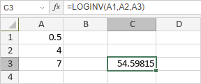

LOGINV funkcija
LOGINV funkcija je jedna od statističkih funkcija. Koristi se za vraćanje inverzne vrednosti lognormalne kumulativne distribucione funkcije za dati x sa zadatim parametrima.
Sintaksa
LOGINV(probability, mean, standard_dev)
LOGINV funkcija ima sledeće argumente:
| Argument | Opis |
|---|---|
| probability | Verovatnoća povezana sa lognormalnom distribucijom, numerička vrednost veća od 0 i manja od 1. |
| mean | Srednja vrednost ln(x), numerička vrednost. |
| standard_dev | Standardna devijacija ln(x), numerička vrednost veća od 0. |
Napomene
Kako primeniti LOGINV funkciju.
Primeri
Slika ispod prikazuje rezultat koji vraća LOGINV funkcija.
